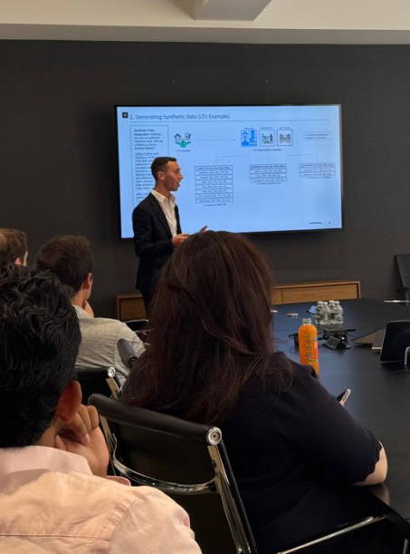

Experience
Prime Finance - Machine Learning Engineer Intern
- Location: New York, NY
- Duration: May 2025 - August 2025
- Designed and implemented an AI-powered loan prioritization system to score hundreds of real estate deals weekly, reducing initial screening time and helping the investment team focus on high-potential opportunities.
The Bespoke Banker - Client Engagement and Financial Analysis Intern
- Location: New York, NY
- Duration: July 2023 - August 2023
- Directly consulted with clients to understand their borrowing needs before conducting an in-depth analysis of their financial spreads to extrapolate and present compelling company narratives, enabling 10 clients to secure loans with optimal terms.